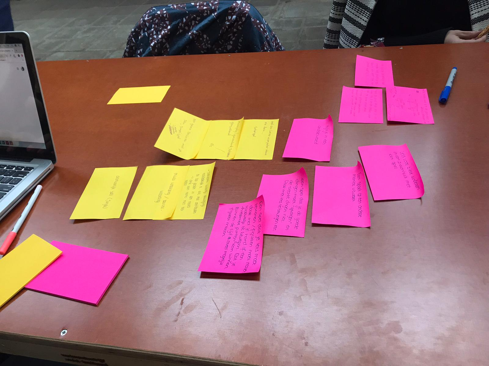
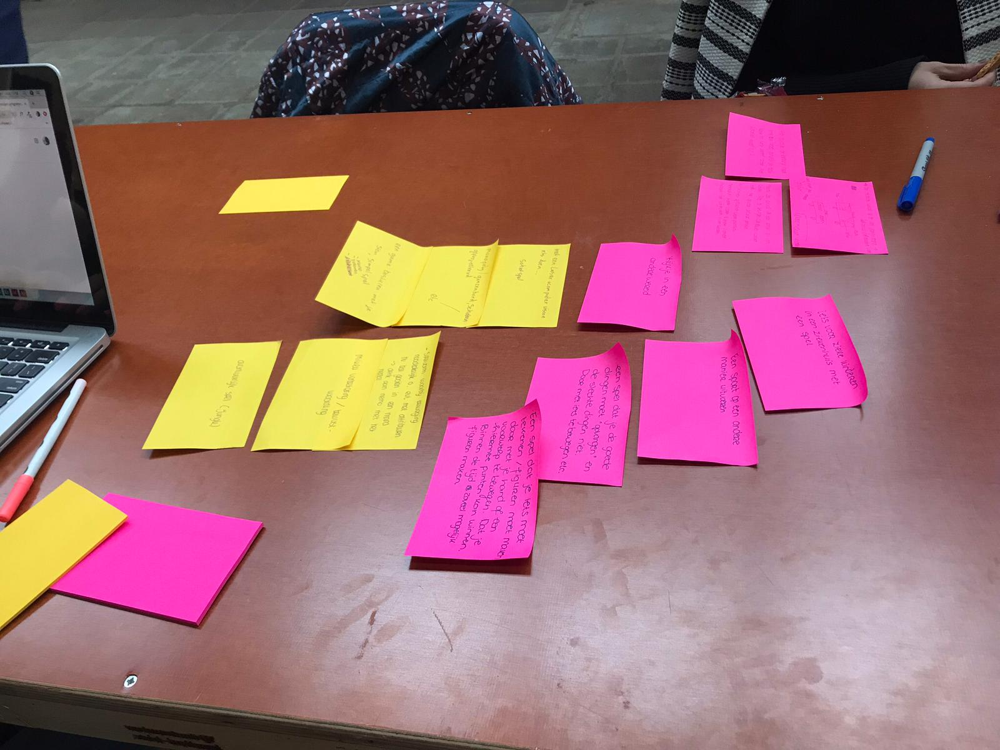
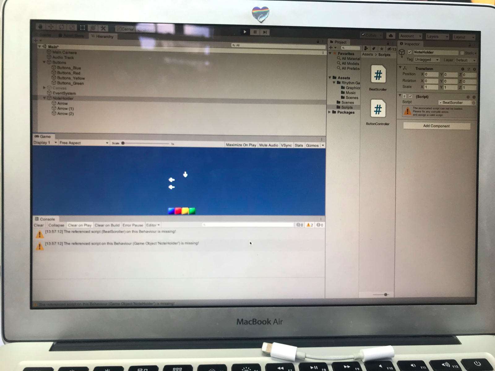
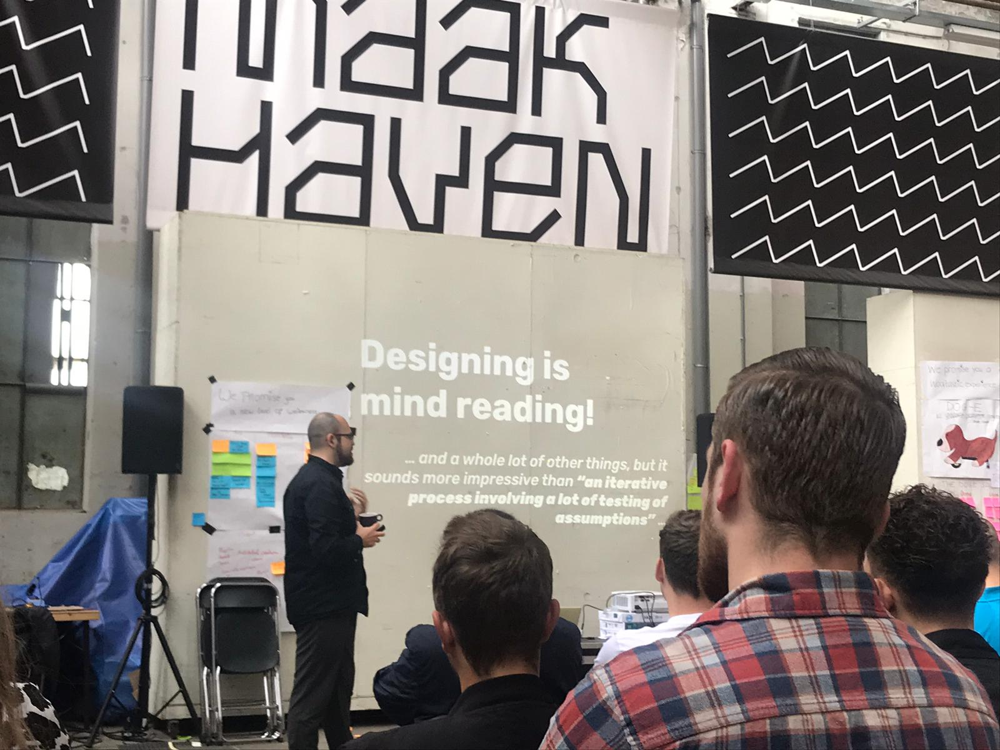

Vandaag was de allereerste dag van HCI! Een spannende en zware week die voor mij begint, want deze week heb ik zowel elke dag HCI als de montage van de dansproductie waar ik in zit die donderdag in première gaat. Na overleg met Chris en mijn SLB’er heb ik er zelf voor gekozen om dit allebei aan te gaan en heb ik alle moet om dit tot een mooi einde te brengen. Deze eerste dag begonnen we met een praatje van Chris en daarna werden de groepjes bekend gemaakt. Ik had gelukkig mijn onderwerp wat ik op nummer 1 had staan: Playful Interaction, dus daar was ik heel blij mee. Samen met mijn groepje gingen we een tafel pakken en hebben we ons gesetteld op de plek waar we deze twee weken aan de slag gaan. Toen was het tijd om elkaar wat beter te leren kennen en te overleggen wat iedereen over het onderwerp weet en in zijn gedachte heeft. Dit ging daarna over in een lange brainstormsessie. Hieruit zijn verschillende ideeën gekomen. Vervolgens zijn we technieken en sensoren gaan onderzoeken en uitproberen. Samen met Lynde en Martijn ben ik de Leap Motion uit gaan proberen, waarmee je beweging kan signaleren. Medy en Shantusha zijn aan de slag gegaan met een (Bare Conductive) Touch Board. Nadat wij klaar waren hebben we ook nog even meegeholpen en meegedacht met het Touch Board. Er mistte helaas een mp3 kabeltje waardoor het geluid niet afgespeeld kon worden. Met het Touch Board wilde we namelijk een piano maken door of speciaal verf te gebruiken of me een potlood konden we dit realiseren. Tot slot hebben we ook nog nagedacht over het maken van een knop, hiervoor hebben we wat in arduino in elkaar gezet. De eerste dag was heel erg wennen en nog zoeken naar waar we moesten beginnen, maar al met al hebben we al over veel dingen nagedacht en ook uitgeprobeerd.
 


De tweede dag van HCI! Vandaag begonnen we om 9 uur met de “Daily Standup”: samen met het groepje gingen we naar ons scrumbord kijken om te zien wat we al gedaan hebben, wat we moeten doen en wat op de planning staat, om te checken of alles nog goed staat. Daarna gingen Medy en Shantusha verder aan het Touch Board werken. Uiteindelijk is het ze gelukt om een soort piano hiermee te maken, dus om aanraking en geluid te combineren. Samen met Martijn en Lynde ging ik de Makey Makey uitproberen. Helaas was de “normale/grote” Makey Makey niet beschikbaar, dus zijn we aan de slag gegaan met de Makey Makey GO. Hiermee hebben we heel veel dingen getest en de resultaten waren heel positief. We hebben een klein prototype gemaakt met aluminiumfolie om aanraking te testen als een soort knop. Hiermee konden we ook spelletjes spelen wat heel erg past bij onze ideeën. Ook hebben we nog het Touch Board en de Makey Makey Go geprobeerd te combineren. Hiermee was het gelukt om een geluid te krijgen zodra je op een knop drukte en ondertussen kon je dus ook het spel spelen met die knoppen. Medy & Shantusha hebben na het Touch Board nog even iets met een projector uitgeprobeerd, maar daar kwamen ze helaas niet helemaal uit. Verder hadden we vandaag ook een gastspreker: Vincent van Next Empire, die vertelde over wat hij allemaal met zijn bedrijf doet. Ze maken apps, doen dingen met audio, maken installaties en ga zo maar door. Heel veel verschillende dingen dus en ze hebben ook veel verschillende klanten. Aan het eind van de dag hebben we met het groepje samen verder nagedacht over de mogelijkheden voor wat we kunnen gaan maken. Dit was dus vooral een dag van uitproberen, uitproberen en nog meer uitproberen.
Vandaag was de derde dag van HCI: een dag waarbij we best veel bereikt hebben! We begonnen met de Daily Standup, waarbij we dit keer moesten kijken of onze notes wat op het bord stond niet te algemeen waren. Hierbij hebben we dus wat onderdelen zoals “concepting” en “technieken testen” verfijnd naar specifiekere taken. Ook hebben we gekeken of alles nog goed stond en hebben we nieuwe taken erbij geschreven. Daarna was er een gastspreker, dit was vandaag Joost Broekens: een leraar en onderzoeker met een “marvels” achtergrond in affective computing. Ook is hij bezig met een startup bedrijf. Hij heeft veel verteld over alles wat met robots te maken heeft. Na de gastspreker zijn we verder aan de slag gegaan. Aangezien we weer de uitgebreide Makey Makey mis zijn gelopen zijn we gaan kijken hoe we het Touch Board kunnen gebruiken om meerdere aanrakingen te combineren met knoppen. Medy & Shantusha zijn dit eerst uitgaan zoeken en hebben het geconnect met Arduino. Ondertussen ben ik met Martijn en Lynde naar de GAMMA gegaan om onderdelen te halen voor een prototype dat we wilde maken. Toen we terug waren zijn we alles in elkaar gaan zetten: met hout, aluminium, het Touch Board en de connectie met Arduino. Door het spel Guitar Hero te connecten aan het prototype konden we uiteindelijk dit spel spelen! Nu willen we een eigen game maken die we hiermee zouden kunnen besturen. Ik ben daarom Unity gaan downloaden en een account hiervoor aan gaan maken. We zijn allemaal een beetje tutorials gaan opzoeken en gaan nadenken over wat we kunnen gaan creëren. Morgen willen we verder uit gaan zoeken hoe we de game kunnen gaan maken via dus eventueel Unity.
Vandaag was de vierde dag van HCI. En dubbel zo spannende dag voor mij, want vandaag gaat dus ook mijn dansproductie in première! Tot nu toe heb ik de combinatie van dansen en HCI pittig maar wel heel positief ervaren. Het is voor mij juist een goede afleiding van een lange dag HCI steeds. Helaas was deze 4de HCI-dag een minder positieve dag dan gister. We begonnen met de Daily Standup om alle taken te checken. Ook moesten we vandaag een “Promise” gaan bedenken en opschrijven, om een doel voor het project te hebben. Daarna was er weer een gastspreker, dit was vandaag Teun Verkerk. Hij heeft interaction desgin gestudeerd wat nu de studie interactie & games is. Daarnaast heeft hij een fascinatie voor electronic lifeforms en media in public spaces. Hij heeft verteld over verschillende interessante projecten die hij gemaakt heeft en het was vooral gebaseerd op artificial creatures. Na de gastspreker waren we er helemaal klaar voor om alles te gaan uitzoeken om zelf een game te maken. Dit is dan ook waar ik vooral de hele dag mee bezig ben geweest. Eerst ben ik Unity verder gaan onderzoeken en heb ik verschillende tutorials opgezocht waarmee ik iets kon gaan maken. Medy heeft mij uiteindelijk geholpen hiermee. We waren best ver gekomen; er waren al blokjes die aan toetsen verbonden waren en die veranderde wanneer je ze indrukte, maar daarna ging het helaas mis. De code wilde maar niet lukken en we hebben hierbij ook hulp aan Tim gevraagd. Vervolgens hebben we ook nog Unreal Engine en Scratch uitgeprobeerd om een game in te maken. Het doel wat we voor ogen hadden kwam niet echt uit na heel veel geprobeerd te hebben. Tijdens dat wij aan de game hebben gewerkt hebben Martijn en Shantusha ook het prototype nog uitgewerkt. Aan het einde van de dag hebben we met z’n alle nagedacht over wat we nou echt willen en kunnen maken en gebrainstormd over andere opties dan zelf een game maken. Hieruit kwamen dingen zoals met bijvoorbeeld meer met licht en geluid werken. Thuis willen we nog verder gaan nadenken over ideeën zodat we morgen weer verder dingen kunnen gaan testen.
De vijfde en alweer laatste dag van de eerste week van HCI! Opnieuw begon de dag met de Daily Standup: het checken van de taken, nieuwe taken erbij schrijven en de promise checken. Vervolgens was er vandaag de laatste gastspreker: Marcello Gómez Maureira. Dit keer was het onderwerp van de gastspreker Playful Interaction, wat dus beter aansloot op ons onderwerp dan de andere sprekers! Marcello werkte als game designer, game artist, heeft onderzoek gedaan, is engineer geweest en is nu een docent. Hij heeft dus al veel gevarieerde ervaring opgedaan. Tijdens het college heeft hij vooral verteld wat Playful Interaction is en wat je ermee kan. Denk aan het gebruik van emotie etc. Verder heeft hij kort nog een voorbeeld laten zien van wat hij zelf heeft gemaakt. Na de gastspreker zijn we opnieuw aan de slag gegaan met het maken van een game, maar dit keer in Processing. Na gister veel dingen te hebben geprobeerd zonder het gewenste resultaat en veel tips om processing te gaan gebruiken door docenten hebben we hiervoor gekozen. Hier zijn Medy, Shantusha en Lynde vooral mee aan de slag gegaan. Ondertussen ben ik met Martijn van alles met licht gaan uittesten omdat we gister hadden besloten hier ook misschien iets mee te gaan doen. We hebben gewerkt met Arduino, het Touch Board en aan het eind nog met een LedStrip erbij. Hier zijn heel veel dingen mee gelukt: we konden het lampje aan laten gaan door op onze prototype-knop te klikken, we hadden een combinatie gemaakt waarmee je door alle goede knoppen in te drukken het lampje aan kon laten gaan (een soort kluis idee) en zo nog een aantal dingen. We willen dit zeker gebruiken in onze installatie uiteindelijk en het liefst in een LedStrip vorm! Vervolgens hebben we alles gecombineerd; het zelfgemaakte spel kon bediend worden met het prototype van knoppen, er was geluid te horen zodra het balletje een rand raakte en het licht kon aangaan! Verder hebben we nagedacht over het uiteindelijke beeld wat we voor ons zien. Nadat we zelf heel blij waren met het bereikte resultaat hebben we alles laten zien aan de docent van onze topic. Helaas werd hier niet zo positief op gereageerd terwijl andere docenten die langs waren geweest het tof vonden dat we een game hadden gemaakt en resultaten met het licht hadden. We kregen alleen maar te horen dat het spel al 50 jaar bestaat en we het dus niet zelf hebben gemaakt en bedacht, terwijl wij het wel zelf hebben gemaakt met behulp van een tutorial. Er zitten geen ervaren programmeurs in ons groepje en voor ons was dit dan ook een hele stap dat dit was gelukt. De reactie was dan ook vrij demotiverend. Van onze docent moesten we het nog veel meer gaan uitbreiden met extra technologieën of dingen zoals beweging, wat uiteraard ook ons plan was. Dit was nog maar de basis, maar waar we wel heel trots op waren. We gingen na een trots gevoel te hebben gehad dus helaas met een minder zeker gevoel het weekend in. Dit weekend willen we allemaal na gaan denken hoe we de game meer naar onze eigen hand en specialer kunnen maken, zodat we dinsdag hier gelijk mee aan de slag kunnen gaan en alsnog een super gave playful interaction installatie neer kunnen zetten.
Dag 6, de eerste dag van de tweede week HCI. Een hele dubbele dag die begon met veel stress. Aan het begin van de dag hadden we een gesprek met de docent van onze topic en hieruit was de conclusie dat wat we tot nu toe hadden wel echt heel anders moest worden of moeilijker moest worden gemaakt. Ik ben aan de slag gegaan met Kinect, om uit te proberen of we nog iets met movement tracking konden gebruiken. Ondertussen zijn de andere bezig geweest met het aanpassen van de game Pong. Uiteindelijk zagen we het niet gebeuren dat we dit spel goed genoeg konden uitbreiden.. We wilden een ander concept, maar niet dat dat al ons werk van de afgelopen dagen voor niks was geweest! We hadden ondertussen ook een idee van een “kluis” gehad, wat best realiseerbaar voor ons was en dat zijn we gaan voorleggen aan de docent. Hieruit is toen het idee van een escape room gekomen. Het idee is dat we verschillende spellen gaan gebruiken (waaronder dus Pong en andere elementen die we al getest hebben) waarmee de gebruiker codes kan krijgen, zodat hij of zij uiteindelijk de kluis kan openen. De docent was er eindelijk vrij enthousiast over en dit was dan ook een hele opluchting na veel stress in de ochtend voor ons! We zijn het hele idee vervolgens uit gaan tekenen en goed gaan brainstormen. Dit hele idee wilden we weer voorleggen aan de docent, maar omdat ze nergens te vinden was en de docenten ook niet wisten waar ze was hebben we het aan een andere docent uitgelegd. Hij was er gelukkig ook enthousiast over en kwam ook nog met nieuwe ideeën. We zijn dus naar de GAMMA gegaan om de eerste onderdelen voor onze echte installatie te halen. Aangezien we een heel “hokje” willen maken hebben we veel hout nodig, wat wel wat gesjouw is. We besloten om eerst één plaat te halen zodat we één van de games konden uittesten en het idee verder konden uitwerken. Samen met Medy, Shantusha en Lynde ben ik dan ook bezig geweest met het aftekenen etc. van alle elementen voor de eerste plaat. Ook hebben we alvast hout voor de kluis gehaald, die Martijn vervolgens in elkaar heeft gezet. Het begin van de installatie is gemaakt en er is een heel plan voor morgen gemaakt. Het wordt nog veel werk om alles af te krijgen, maar we hebben er weer volle motivatie voor!